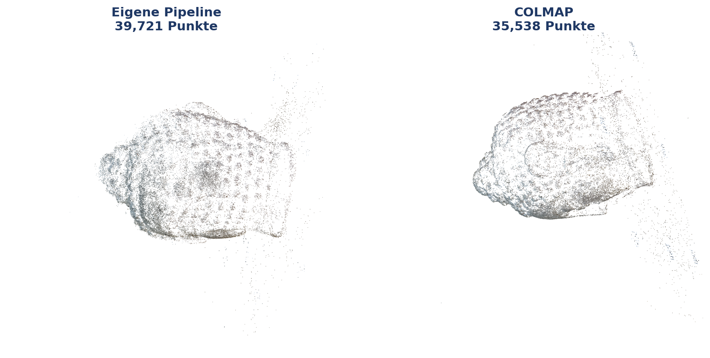

1HTW Berlin, Fachbereich 2 Informatik in Ingenieurwissenschaften, Wilhelminenhofstr. 75a, 12459 Berlin, Rudolf.Hoffmann@Student.HTW-Berlin.de, www.htw-berlin.de
Abstract: Wie weit trägt eine selbst implementierte Photogrammetrie-Pipeline auf einem handelsüblichen Laptop, ohne GPU-Cluster und ohne kommerzielle Software? Der Beitrag beantwortet diese Frage anhand eines studentischen Implementierungsprojekts und grenzt dabei bewusst genau ab, was „selbst implementiert” bedeutet. Etablierte Bausteine werden aus Bibliotheken bezogen: SIFT-Merkmale, FLANN-Matching, die robusten Schätzer für Fundamental-, Essential- und Homographiematrix sowie PnP stammen aus OpenCV, der nichtlineare Least-Squares-Löser aus SciPy, die Poisson-Oberflächenrekonstruktion aus Open3D. Eigenentwicklung ist die vollständige Rekonstruktionslogik, die diese Bausteine erst zu einer Pipeline verbindet, samt Problemformulierung des Bundle Adjustment. Die Antwort auf die Frage nach der Programmiersprache lautet daher differenziert: Die Steuerungs- und Geometrielogik ist vollständig in Python und NumPy geschrieben, kein Projektbestandteil in einer anderen Sprache, während die numerisch teuren Kernels in den C++-Backends der genannten Bibliotheken laufen. Auf einem Datensatz mit 67 Aufnahmen und mitgelieferten Ground-Truth-Posen registriert die Pipeline alle Kameras und liefert eine formtreue Punktwolke aus 40.233 Punkten bei 1,58 px mittlerem Reprojektionsfehler. Der Vergleich mit der Ground Truth zeigt jedoch Schwächen, die diese pipeline-eigene Kennzahl nicht anzeigt: Die geschätzte Brennweite liegt 47 % neben dem wahren Wert, die Kameraorientierungen weichen im Median um 6,2° ab, und zwei identische Aufrufe liefern unterschiedliche Ergebnisse. COLMAP auf denselben Bildern, derselben CPU und mit derselben Merkmalszahl erreicht dagegen 0,2 % Brennweiten- und 0,11° Orientierungsfehler in einem Viertel der Laufzeit. Die Genauigkeit steckt also in den Daten, und die Lücke liegt in der Umsetzung. Für jede der gefundenen Grenzen benennt der Beitrag die Ursache im Code.
Keywords: Structure-from-Motion; Photogrammetrie; Python; Punktwolke; Bundle Adjustment; Visualisierung; Studierendenprojekt
Aus einer Handvoll gewöhnlicher Fotos ein dreidimensionales Modell zu berechnen, gehört heute zu den Standardwerkzeugen von Vermessung, Denkmalpflege, Robotik und AR/VR. Drohnen kartieren Baustellen, Museen digitalisieren Exponate, autonome Systeme rekonstruieren ihre Umgebung. Die zugrundeliegende Technik ist in allen Fällen Structure-from-Motion (SfM), also die gleichzeitige Schätzung der Szenengeometrie und der Kamerapositionen aus reinen Bilddaten.
In der Praxis greifen die meisten Anwender zu fertigen Werkzeugen wie COLMAP, Meshroom oder RealityCapture. Diese liefern gute Ergebnisse, verbergen die zugrundeliegenden Algorithmen aber als Blackbox. Das hier beschriebene Projekt geht den umgekehrten Weg und baut die Verarbeitungskette selbst, mit frei verfügbaren Bibliotheken und ohne spezialisierte Hardware.
Daraus ergeben sich zwei Ziele. Das erste ist didaktisch: Jede Verarbeitungsstufe soll durch Zwischenergebnisse sichtbar werden, damit nachvollziehbar wird, was zwischen Eingabebild und Punktwolke tatsächlich geschieht. Das zweite ist evaluativ: Die Ergebnisse werden gegen Ground-Truth-Kameraposen vermessen, um Möglichkeiten und Grenzen einer reinen Python-Umsetzung belastbar einzuordnen. Der Beitrag berichtet beides, einschließlich der Fehler, die dabei sichtbar geworden sind.
SfM geht auf die Mehrbildgeometrie der 1980er- und 1990er-Jahre zurück und wurde von Hartley und Zisserman [1] systematisiert. Moderne inkrementelle Systeme kulminieren in COLMAP [2], das robuste Merkmalsverarbeitung, sorgfältige Ausreißerbehandlung und einen effizienten C++-Kern für das Bundle Adjustment kombiniert und heute als Referenz für quelloffene SfM-Software gilt.
Drei geometrische Grundideen tragen die gesamte Pipeline.
Die Epipolargeometrie verbindet zwei Bilder desselben Punktes über die Fundamentalmatrix F. Ein Punkt im ersten Bild schränkt seinen Partner im zweiten Bild auf eine Gerade ein, die Epipolarlinie. Diese Bedingung erlaubt es, falsche Korrespondenzen rein geometrisch zu verwerfen.
Die Triangulation rekonstruiert einen 3D-Punkt als Schnitt zweier Sehstrahlen, sobald zwei Kameraposen bekannt sind. Je größer der Winkel zwischen den Strahlen ausfällt, desto stabiler wird die Tiefenschätzung. Der Datensatz in Abschnitt 4 zeigt, wie stark dieser Zusammenhang das Ergebnis prägt.
Das Bundle Adjustment (BA) optimiert alle Kameraposen und alle 3D-Punkte gemeinsam so, dass die Summe der Reprojektionsfehler minimal wird, also der Abstände zwischen gemessenem und zurückprojiziertem Bildpunkt. Es ist das numerische Herz jeder präzisen Rekonstruktion und zugleich die Stufe, an der sich in Abschnitt 4.3 ein grundlegendes Problem zeigt.
Die Formulierung „selbst gebaute Pipeline” verlangt eine genaue Abgrenzung, denn SIFT, FLANN und RANSAC sind etablierte Verfahren, deren Implementierungen niemand ohne Not neu schreibt. Die Arbeitsteilung in diesem Projekt sieht wie folgt aus: Aus den Bibliotheken stammen die numerischen Primitive, also einzelne, klar umrissene Rechenschritte. Selbst geschrieben ist alles, was diese Primitive zu einer Rekonstruktion verbindet, sowie das vollständige Fehlermodell des Bundle Adjustment.
| Stufe | Aus Bibliotheken | Eigener Python-Code |
|---|---|---|
| Merkmale | cv2.SIFT_create, optional kornia auf der GPU |
Bildladen mit EXIF-Rotation, Schätzung der Intrinsik, Zwischenspeicherung der Merkmale |
| Matching | cv2.FlannBasedMatcher (k-nächste Nachbarn), cv2.kmeans für das visuelle Vokabular |
Lowe-Ratio-Test, Cross-Check, Auswahl der Kandidatenpaare (erschöpfend, sequenziell, Vokabularbaum mit TF-IDF), blockweiser GPU-Matcher |
| Geometrische Verifikation | cv2.findFundamentalMat (USAC_MAGSAC), findEssentialMat, recoverPose, findHomography |
Hartley-Normierung, Planaritätsprüfung, Inlier-Buchführung, Zusammenhangskomponenten des Szenengraphen per Union-Find |
| Inkrementelle Rekonstruktion | cv2.triangulatePoints (DLT), cv2.solvePnPRansac, solvePnPRefineLM, cv2.Rodrigues |
Wahl des Startpaars, Reihenfolge der Registrierung, Verwaltung von Tracks und Beobachtungen, Akzeptanzkriterien für neue Punkte, Ausreißerentfernung, Track-Merging, Retriangulation nach BA |
| Bundle Adjustment | scipy.optimize.least_squares (Trust-Region-Reflective), scipy.sparse |
Parametrisierung, Residuenfunktion inklusive Brown-Conrady-Verzeichnung, Aufbau der dünnbesetzten Jacobi-Struktur, adaptive Huber-Skala, Divergenzschutz, lokales BA-Fenster |
| Dichte Rekonstruktion | cv2.StereoSGBM, stereoRectify, reprojectImageTo3D |
Auswahl der Stereopaare, Sichtbarkeitsfilter, Punktbudget |
| Mesh | Open3D (Normalenschätzung, Screened Poisson) [3] | Vorbereitung und Reinigung der Wolke, Farbübertragung, Export |
| Ausgabe und Diagnose | matplotlib | binärer PLY-Writer, Kameraexport, 19 Typen von Diagnosebildern |
Die Antwort auf die Frage, ob wirklich alles Python ist, lautet damit: Der gesamte Projektcode ist Python, rund 9.700 Zeilen, davon etwa 1.600 für die Visualisierung. Eine eigene Zeile C++ oder CUDA existiert nicht. Die aufgerufenen Bibliotheken sind ihrerseits in C++ geschrieben, so dass die rechenintensiven Primitive kompiliert ausgeführt werden und Python die Steuerungsschicht bildet. Für die Laufzeit ist diese Aufteilung günstiger, als es zunächst klingt: Die in Abschnitt 4.5 gemessene Dominanz des Matchings entsteht innerhalb der OpenCV-Aufrufe und nicht im Python-Code darum herum. Der Engpass liegt also in der Strategie, nicht in der Sprache.
Die Pipeline gliedert sich in die sechs Stufen aus Fig. 1. Alle Abbildungen dieses Abschnitts stammen aus einem einzigen Lauf über 67 Bilder (Lauf B, siehe Abschnitt 4.1), zeigen also durchgehend dieselbe Rekonstruktion.
Für jedes Bild werden bis zu --n_features SIFT-Merkmale [4] mit 128-dimensionalen
Deskriptoren detektiert, im Referenzlauf 12.000. SIFT ist skalierungs-, rotations- und
beleuchtungsinvariant und findet Merkmale bevorzugt an Ecken, Kanten und texturierten
Flächen. Auf Systemen mit GPU übernimmt eine kornia-basierte Detektion, sonst OpenCV-SIFT
auf der CPU. Beide Pfade liefern denselben Ausgabe-Kontrakt.


Über alle 67 Bilder entstehen 545.327 Merkmale, im Mittel 8.139 pro Bild bei einem Minimum von 1.939 und einem Maximum von 12.001. Das Maximum liegt exakt am gesetzten Limit, bei sechs Bildern begrenzt also der Parameter und nicht die Szene (Fig. A1 im Anhang).
Korrespondenzen zwischen Bildpaaren findet eine FLANN-basierte Suche nach den beiden nächsten Nachbarn. Der anschließende Ratio-Test nach Lowe [4] behält nur Zuordnungen, deren bester Treffer deutlich eindeutiger ist als der zweitbeste; im Referenzlauf liegt die Schwelle bei 0,70. Für ungeordnete oder große Datensätze stehen sequenzielles Matching und ein Vokabularbaum zur Verfügung. Der Referenzlauf vergleicht erschöpfend alle 2.211 Bildpaare.

Jedes Bildpaar durchläuft vier Filter. Zuerst normiert eine Hartley-Transformation die
Pixelkoordinaten, was die anschließende Schätzung numerisch stabilisiert. Danach schätzt
USAC_MAGSAC robust die Fundamentalmatrix, so dass nur geometrisch konsistente Zuordnungen
als Inlier überleben. Der dritte Filter prüft nach dem Kriterium von Torr, ob eine
Homographie dieselben Inlier ebenso gut erklärt; ab einem Anteil von 85 % gilt das Paar als
planar und wird verworfen, weil sich aus einer solchen Fundamentalmatrix keine belastbare
Rotation ableiten lässt. Zuletzt wird die Essential-Matrix bestimmt und über die
Cheiralitätsbedingung in die relative Kamerapose zerlegt. Ein Union-Find-Verfahren prüft
anschließend die Zusammenhangskomponenten des Szenengraphen und verwirft alles außer der
größten. Im Referenzlauf überstehen 524 der 2.211 Paare die Verifikation, und alle
67 Bilder liegen in einer einzigen Komponente (Fig. A3).

Die Rekonstruktion wächst kameraweise. Als Startpaar wählt die Pipeline das Paar mit dem größten Produkt aus Basislinie und Inlier-Zahl, sofern der Triangulationswinkel mindestens 5° beträgt. Anschließend registriert sie iterativ jeweils das Bild mit den meisten 2D-3D-Korrespondenzen über PnP mit RANSAC und einer Levenberg-Marquardt-Verfeinerung. Neue 3D-Punkte werden mit allen sichtbaren Kameras trianguliert und nur dann übernommen, wenn Tiefe, Triangulationswinkel und Reprojektionsfehler die Schwellen einhalten.
 |
 |
| Schritt 001: 2 Kameras, 3.348 Punkte | Schritt 010: 11 Kameras, 12.573 Punkte |
 |
 |
| Schritt 035: 36 Kameras, 31.734 Punkte | Schritt 066: 67 Kameras, 46.883 Punkte |

Nach jeweils fünf neu registrierten Kameras und am Ende des Laufs optimiert ein Bundle
Adjustment alle Parameter gemeinsam. Als Solver dient scipy.optimize.least_squares im
Trust-Region-Reflective-Verfahren, versorgt mit einer selbst aufgebauten dünnbesetzten
Jacobi-Struktur. Das Projektionsmodell enthält radiale Verzeichnung nach Brown-Conrady mit
zwei Koeffizienten. Als robuste Verlustfunktion dient ein Huber-Loss, dessen Skala aus der
Streuung der Startresiduen abgeleitet wird. Ein Divergenzschutz verwirft das Ergebnis,
falls sich der Fehler um mehr als den Faktor 1,5 verschlechtert.

Diese Abbildung zeigt nicht den erwarteten Verlauf und ist gerade deshalb das wichtigste Diagnosebild des Beitrags. Erstens fällt der RMSE nicht, sondern steigt: von 7,55 px bei 7 Kameras über ein Minimum von 6,09 px bei 12 Kameras auf 10,88 px bei allen 67 Kameras. Mit jeder zusätzlichen Kamera wird das Gleichungssystem widersprüchlicher, die Rekonstruktion wächst also auf Kosten ihrer Konsistenz. Der Sprung zwischen der vierten und der fünften Runde markiert den Punkt, an dem sich eine Kameragruppe nicht mehr spannungsfrei einfügt. Zweitens liegen die Kurven vor und nach der Optimierung praktisch übereinander: Das BA verbessert den Fehler in keiner Runde nennenswert, weil es bereits in einem lokalen Minimum sitzt. Dazu passt, dass die Brennweite über alle 67 Kameras hinweg unverändert bei 2.736,0 px bleibt und jede Runde eine Änderung von exakt null protokolliert. Drittens bleibt auch die Punktzahl unverändert, denn das BA verschiebt Punkte, entfernt sie aber nicht; gefiltert wird ausschließlich beim Triangulieren und beim Export.
Der scheinbare Widerspruch zum ausgewiesenen mittleren Reprojektionsfehler von 1,58 px löst sich über die Verteilung der Residuen. Der RMSE wird von wenigen großen Werten dominiert, während der Median bei 0,84 px liegt.

Optional erzeugt die Pipeline über StereoSGBM eine dichte Punktwolke und über Screened
Poisson in Open3D [3] eine Mesh-Oberfläche. Im Referenzlauf umfasst die dichte Wolke exakt
500.000 Punkte. Dieser Wert ist keine Eigenschaft der Szene, sondern der fest verdrahtete
Standardwert max_dense_pts, der ohne Hinweis im Log abschneidet und über die
Kommandozeile nicht erreichbar ist. Die Punktzahl einer dichten Wolke trägt in dieser
Fassung folglich keine Qualitätsinformation.
Als Referenzsystem dient COLMAP [2], aufgerufen über denselben Einstiegspunkt
(--backend colmap) auf identischen Eingabedaten. Das Repository startet dabei
nacheinander Merkmalsextraktion, erschöpfendes Matching und den inkrementellen Mapper und
liest das Ergebnis in dasselbe Ausgabeformat zurück. Verwendet wurde COLMAP 4.1.1 ohne
CUDA, so dass beide Systeme ausschließlich auf der CPU desselben Rechners arbeiten. Der
Vergleich in Abschnitt 4.3 stützt sich damit auf zwei unabhängige Maßstäbe: die
mitgelieferten Ground-Truth-Posen und ein etabliertes zweites SfM-System auf denselben
Bildern.
Ausgewertet wird der Datensatz „Buddha” aus dem AliceVision-Projekt: 67 Aufnahmen einer genoppten Buddha-Statue auf einem Drehteller, 2736 × 1540 Pixel, mit Ground-Truth-Projektionsmatrix je Bild. Der Datensatz erfüllt die Anforderungen an eine SfM-Aufnahme gut, denn er bietet hohe Überlappung, dicht abgetastete Blickwinkel und eine stark texturierte Oberfläche. Für die Skalierungsmessungen dienen zusätzlich gleichmäßig ausgedünnte Teilmengen mit 6 und 20 Bildern.
Alle Zahlen dieses Abschnitts stammen aus zwei Quellen. Die Abbildungen und die Kennzahlen in Tab. 2 kommen aus zwei vollständigen Visualisierungsläufen (Lauf A und Lauf B) mit identischer Konfiguration. Die Genauigkeits- und Skalierungswerte in Tab. 3 und Tab. 4 stammen aus einer separaten Messreihe, die jeden Lauf protokolliert und gegen die Ground Truth auswertet.
| Lauf A (02.08.2026) | Lauf B (03.08.2026) | |
|---|---|---|
| Bilder und registrierte Kameras | 67 von 67 | 67 von 67 |
| 3D-Punkte | 40.844 | 40.233 |
| Mittlerer Reprojektionsfehler | 1,58 px | 1,58 px |
| BA-Runden | 14 | 14 |
| Gesamtlaufzeit | 1.540,3 s | 1.504,3 s |

Auf diesem dicht abgetasteten, gut texturierten Datensatz liefert die Pipeline eine vollständige und formtreue Rekonstruktion mit allen 67 registrierten Kameras und 40.233 Punkten.

Vor jedem Fehlermaß richtet eine Sim(3)-Anpassung nach Umeyama die geschätzten Kamerazentren auf die Ground Truth aus, da monokulares SfM skalenfrei ist. Positionsfehler sind auf die Ausdehnung der Ground-Truth-Trajektorie normiert, damit Läufe mit unterschiedlich vielen registrierten Kameras vergleichbar bleiben. Als Referenzsystem läuft COLMAP über denselben Einstiegspunkt auf denselben Bildern, mit derselben Merkmalszahl, ebenfalls erschöpfendem Matching, ohne GPU und auf demselben Rechner. Seine Kameraposen werden mit demselben Skript und derselben Ausrichtung bewertet wie die eigenen.
| Kennzahl | Basiskonfiguration | Referenzlauf | COLMAP |
|---|---|---|---|
| Registrierte Kameras | 67 von 67 | 67 von 67 | 67 von 67 |
| 3D-Punkte | 39.721 | 40.232 | 35.538 |
| Mittlere Tracklänge | 2,70 | 2,61 | 4,69 |
| Reprojektions-RMSE | 2,08 px | 1,60 px | nicht exportiert |
| Geschätzte Brennweite | 2.736,0 px | 2.736,0 px | 1.857,5 px |
| Brennweitenfehler | +47,0 % | +47,0 % | -0,2 % |
| Rotationsfehler, Median und Maximum | 6,29° / 20,28° | 6,23° / 16,48° | 0,11° / 0,20° |
| Positionsfehler, Median und Maximum | 2,06 % / 11,60 % | 2,24 % / 9,79 % | 0,02 % / 0,05 % |
| Laufzeit | 1.135,5 s | 1.761,3 s (davon 300,6 s dicht) | 293 s |
| Spitzenspeicher | 1.470 MB | 1.541 MB | nicht gemessen |
Das zentrale Ergebnis steht in der Zeile zur Brennweite. Die Bilder des Datensatzes tragen
keine EXIF-Daten, weshalb die Intrinsik-Schätzung auf die Heuristik focal = max(W, H)
zurückfällt und 2.736 px ansetzt, also die Bildbreite. Der wahre Wert beträgt 1.860,9 px.
Das Bundle Adjustment korrigiert diesen Fehler nie, denn über alle 67 Kameras protokolliert
jede Runde eine Änderung von exakt null. Zwei mögliche Erklärungen wurden experimentell
ausgeschlossen. Die Schranken des Optimierers liegen bei 1.368 px und 5.472 px und
enthalten den wahren Wert, scheiden also aus. Eine Parameterskalierung als Ursache wurde
durch einen Kontrolllauf mit aktivierter Jacobi-Skalierung widerlegt, bei dem sich die
Brennweite ebenfalls nicht bewegte. Es bleibt die Erklärung, dass die Rekonstruktion bei
der falschen Brennweite bereits in sich konsistent ist. Startpose, Triangulation und PnP
wurden alle mit 2.736 px gerechnet, die Struktur ist entsprechend projektiv verformt, und
das BA hat nichts mehr zu gewinnen.
COLMAP entkräftet auf denselben Bildern jede Ausrede, die man dafür anführen könnte. Es startet ebenfalls ohne Kalibrierung, verfeinert die Brennweite aber im eigenen Bundle Adjustment bis auf 1.857,5 px und liegt damit 0,2 % neben der Ground Truth. Der Datensatz enthält also genügend Information, um die Brennweite zu bestimmen; die eigene Umsetzung holt sie nur nicht heraus. Entsprechend fallen die Posenfehler aus: 0,11° gegenüber 6,29° im Median und 0,02 % gegenüber 2,06 % bei der Position. Ein zweiter Unterschied erklärt einen Teil davon. COLMAP verknüpft im Mittel 4,69 Beobachtungen zu einem 3D-Punkt, die eigene Pipeline nur 2,70; längere Tracks binden jede Kamera an mehr gemeinsame Struktur und machen die Lösung steifer.

Daraus folgt die methodisch wichtigste Aussage dieses Beitrags. Die pipeline-eigene Qualitätskennzahl, der Reprojektionsfehler, sieht mit 1,6 px genau dann gut aus, wenn die Geometrie um mehr als 6° verdreht ist. Fig. 8 zeigt denselben Sachverhalt von der anderen Seite, denn dort konvergiert das BA zufrieden, während der Fehler steigt. Wer allein gegen den Reprojektionsfehler optimiert, optimiert also gegen eine Metrik, die diesen Fehlermodus prinzipiell nicht sehen kann. Sichtbar wird er erst im Vergleich gegen die Ground Truth, und ein zweites System auf denselben Daten zeigt zusätzlich, dass der Fehler vermeidbar ist.
Vier byte-identische Aufrufe auf denselben 20 Bildern registrierten 13, 13, 14 und
6 Kameras und lieferten zwischen 3.756 und 6.283 Punkte. Die Streuung der Kamerazahl
beträgt damit 57 %. Die Ursache ließ sich eindeutig lokalisieren: cv2.setRNGSeed wird
nirgends im Projekt aufgerufen, so dass USAC_MAGSAC und solvePnPRansac aus dem
prozessglobalen Zufallszahlengenerator von OpenCV ziehen. Die NumPy-Seeds sind dagegen an
allen vier relevanten Stellen fest gesetzt, weshalb nur die OpenCV-Seite betroffen ist.

| Bilder | Paare | Matching (s) | s pro Paar | Gesamt (s) | s pro Bild |
|---|---|---|---|---|---|
| 6 | 15 | 7,6 | 0,505 | 13,1 | 2,2 |
| 20 | 190 | 94,4 | 0,497 | 113,0 | 5,6 |
| 67 | 2.211 | 1.036,6 | 0,469 | 1.135,5 | 16,9 |

Dieses Ergebnis widerspricht der Erwartung, mit der das Projekt in die Messung gegangen ist, und wird hier bewusst als eigenständiger Befund berichtet. Die Vermutung lautete, das globale Bundle Adjustment werde zum Engpass, weil der voreingestellte SciPy-Löser das Schur-Komplement nicht ausnutzt; ein Löser mit dieser Struktur steht nur im optionalen pyceres-Pfad zur Verfügung, der auf der Messmaschine nicht installiert ist. Der Code-Befund stimmt, die daraus abgeleitete Erwartung an die Laufzeit jedoch nicht. Das Bundle Adjustment wächst zwar deutlich schneller als linear, nämlich von 1,2 s bei 13 registrierten Kameras auf 38,2 s bei 67, also um etwa das Zweiunddreißigfache bei gut fünffacher Kamerazahl. Es startet aber von einem so kleinen Betrag, dass es selbst am oberen Ende der Messreihe nur 3,4 % der Laufzeit ausmacht, während das erschöpfende Matching bei 91 % liegt. Beide Kurven würden sich erst weit außerhalb des vermessenen Bereichs schneiden. Für alle hier realistisch verarbeitbaren Datensatzgrößen ist damit das Matching die Skalierungsgrenze, und Optimierungsarbeit gehört zuerst dorthin. Hochgerechnet bräuchten 200 Bilder allein für das Matching etwa 2,6 Stunden.
Zwei weitere Messwerte runden das Bild ab. Die Zwischenspeicherung der Merkmale und Matches beschleunigt einen Wiederholungslauf um den Faktor 19,9, was die tägliche Arbeit spürbar erleichtert. Der Schlüssel dieses Caches berücksichtigt allerdings nur Dateiname und Dateigröße, so dass ein inhaltlich verändertes Bild gleicher Größe unbemerkt alte Merkmale weiterverwendet. Ein Testfall mit zwei verschiedenen Szenen gleicher Dateigröße zeigt genau dieses Verhalten.
Der Visualizer schreibt 19 Typen von Diagnosebildern ohne Bildschirm direkt auf die Platte,
auf Wunsch als vektorielles PDF mit 300 dpi. Sämtliche Abbildungen der Abschnitte 3 und 4
sind mit Ausnahme des Übersichtsdiagramms in Fig. 1 Nebenprodukte eines einzigen Laufs mit
--visualize. Für die Fehlersuche war dieser Zugang entscheidend, denn die steigende
Kurve in Fig. 8 und das Übergewicht der Zweifach-Tracks in Fig. 9 haben die in
Abschnitt 4.3 vermessenen Defekte überhaupt erst sichtbar gemacht.
Auf dicht abgetasteten, gut texturierten Szenen arbeitet die Pipeline zuverlässig. Sie registriert alle Kameras, erzeugt eine formtreue und korrekt kolorierte Punktwolke mit weniger als 1 % Ausreißern und bleibt dabei mit 1,5 GB Spitzenspeicher im Rahmen eines gewöhnlichen Laptops. Ebenso deutlich sind die Grenzen, und für jede davon lässt sich die Ursache im Code benennen.
Die Intrinsik ist die gravierendste Schwäche. Ohne EXIF-Daten rät die Pipeline
focal = max(W, H) und liegt damit 47 % daneben. Das Bundle Adjustment korrigiert den Wert
nicht, weil die Rekonstruktion bei dieser Brennweite bereits in sich konsistent ist, und
eine Option zur Vorgabe einer bekannten Kalibrierung existiert auf der Kommandozeile nicht.
Die gesamte Rekonstruktion ist dadurch projektiv verformt, ohne dass die interne
Fehlermetrik anschlägt. Dass es sich um ein Implementierungsproblem und nicht um eine
Grenze der Daten handelt, zeigt COLMAP auf denselben Bildern: Es beginnt ebenfalls ohne
Kalibrierung und landet nach eigener Verfeinerung 0,2 % neben der Ground Truth.
Die Ergebnisse sind nicht reproduzierbar. Weil der Zufallszahlengenerator von OpenCV nie gesetzt wird, schwankt die Zahl registrierter Kameras zwischen identischen Läufen um bis zu 57 %. Solange dieser Punkt offen ist, lässt sich der Nutzen jeder weiteren Verbesserung nicht sauber messen, denn jede Änderung verschwindet im Rauschen zwischen zwei Läufen.
Die Skalierungsgrenze liegt beim Matching, nicht beim Bundle Adjustment. Das Bundle Adjustment wächst zwar schneller als linear mit der Kamerazahl, bleibt aber selbst bei 67 Bildern bei 3,4 % der Laufzeit, während erschöpfendes Matching quadratisch viele Paarvergleiche kostet und 91 % beansprucht (Abschnitt 4.5). Die naheliegende Abhilfe über sequenzielles Matching halbiert zwar die Zeit, lässt die Rekonstruktion auf diesem Datensatz aber auf 4 von 20 Kameras zusammenbrechen. Der Grund ist in Fig. A2 im Anhang sichtbar: Die Match-Matrix ist nicht bandförmig, also entsprechen aufeinanderfolgende Dateinamen keinen aufeinanderfolgenden Blickwinkeln. Die inhaltsbasierten Alternativen über Bildretrieval benötigen PyTorch, das auf der Messmaschine fehlt.
Die Tracks sind zu kurz. Bei einer mittleren Tracklänge von 2,6 bis 2,7 stammt die Mehrzahl der Punkte aus nur zwei Bildern und ist damit geometrisch schwach abgesichert, was Fig. 9 als Hauptquelle der Fehlerstreuung ausweist. COLMAP erreicht auf denselben Bildern 4,69 Beobachtungen je Punkt, also fast das Doppelte, und zwar bei weniger Punkten insgesamt. Der Unterschied entsteht nicht beim Detektor, sondern in der Buchführung: Wo Korrespondenzen über mehrere Bilder hinweg zu einem Track verschmelzen, stützt jeder Punkt mehrere Kameras gleichzeitig. Passend dazu sind etwa 8 % der eigenen Punkte exakte Duplikate, also Tracks, die hätten verschmelzen müssen; die dafür vorgesehene Option zeigt im Test keinen messbaren Nutzen.
Ohne Schleifenschluss akkumuliert die Rekonstruktion Drift. Die Registrierung hängt jede neue Kamera an den bereits bestehenden Verbund an, so dass sich kleine Posenfehler über den Rundgang aufsummieren. Genau dieses Verhalten zeigt die steigende Kurve in Fig. 8: Der Fehler wächst mit der Zahl der eingefügten Kameras, statt sich zu stabilisieren. Eine Schleifenschluss-Erkennung ist zwar vorgesehen, setzt aber inhaltsbasiertes Retrieval oder den Vokabularbaum voraus und war auf der Messmaschine nicht verfügbar.
Texturarme und planare Szenen bleiben die theoretisch erwartete Grenze. SIFT findet dort zu wenige Merkmale, wobei Fig. 3 die leeren Regionen bereits auf einer gutmütigen Szene zeigt. Bei einer dominanten Ebene lässt sich die Korrespondenz ebenso gut durch eine Homographie erklären, weshalb die daraus abgeleitete Essential-Matrix keine belastbare Rotation mehr liefert. Die Implementierung erkennt diesen Fall über eine Konkurrenz zwischen Homographie und Fundamentalmatrix nach dem Kriterium von Torr: Erklärt die Homographie mehr als 85 % der Inlier, wird das Bildpaar verworfen. Ein falsches Ergebnis wird dadurch vermieden, der Bildgraph verliert aber Kanten und zerfällt im Extremfall, statt die Ebene über die Homographie zu behandeln.
Die Reife der Randfälle bleibt hinter der Kernfunktion zurück. Von dreizehn geprüften Fehlersituationen behandelt die Pipeline acht sauber. Ein einzelnes unlesbares Bild bricht jedoch den gesamten Lauf ab, nachdem die Merkmalsextraktion bereits bezahlt ist, und vier nicht installierte optionale Backends melden sich mit einem rohen Traceback statt mit einem Installationshinweis. Beides ist an anderer Stelle im Projekt bereits richtig gelöst, etwa bei der Vorabprüfung des COLMAP-Backends, und müsste lediglich übertragen werden.
Der Vergleich mit COLMAP fällt nach allem Gemessenen weniger algorithmisch als praktisch aus. Die Grundstruktur ist in beiden Systemen ähnlich, und beide liefen hier auf derselben CPU, mit denselben Bildern und derselben Merkmalszahl. Trotzdem trennen sie Größenordnungen: 0,11° gegenüber 6,29° Orientierungsfehler, 0,2 % gegenüber 47 % Brennweitenfehler, dazu 293 s gegenüber 1.136 s Laufzeit. Der Unterschied liegt nicht in der Wahl der Algorithmen, sondern in ihrer Ausführung, also in belastbaren Startwerten, in konsequenter Track-Verwaltung, in ausgereifter Ausreißerbehandlung und in einem für dieses Problem gebauten Solver. Die Abwägung lautet damit: didaktische Transparenz und volle Kontrolle auf der einen Seite, Genauigkeit und Geschwindigkeit auf der anderen. Bemerkenswert ist dabei, dass die eigene Pipeline mehr Punkte erzeugt als COLMAP und trotzdem deutlich ungenauer ist; Punktzahl allein ist als Qualitätsmaß wertlos.
Eine vollständig in Python geschriebene SfM-Pipeline rekonstruiert einen gut abgetasteten, texturreichen Datensatz aus 67 Bildern vollständig und formtreu, auf einem handelsüblichen Laptop, in rund 25 Minuten und mit 1,5 GB Spitzenspeicher. Der didaktische Ertrag ist erheblich, denn jede Stufe ist als Bild inspizierbar, und genau diese Bilder haben die Schwächen der Implementierung aufgedeckt.
Das wichtigste Ergebnis des Projekts ist methodisch und war so nicht geplant: Die Selbstauskunft der Pipeline über ihre eigene Qualität ist unzuverlässig. Ein Reprojektionsfehler von 1,6 px signalisiert eine saubere Rekonstruktion, während die Brennweite 47 % danebenliegt und die Kameraorientierungen im Median um mehr als 6° verdreht sind. Sichtbar wird das erst im Vergleich gegen Ground Truth, und der erste Hinweis darauf kam aus einem Diagnosebild, nämlich der BA-Konvergenzkurve, die eben nicht fällt.
COLMAP auf denselben Bildern liefert die Gegenprobe und macht aus dem Befund eine klare Aussage. Mit 0,11° Orientierungsfehler und 0,2 % Brennweitenfehler in einem Viertel der Laufzeit zeigt es, dass die Daten die Genauigkeit hergeben und die Lücke ausschließlich in der eigenen Umsetzung liegt. Genau das ist für ein Lernprojekt die nützlichste Form eines Ergebnisses, denn sie benennt nicht nur eine Grenze, sondern belegt, dass sie überwindbar ist.
Für die Weiterarbeit ergibt sich daraus eine klare Reihenfolge. Zuerst muss der Zufallszahlengenerator von OpenCV gesetzt werden, da ohne Reproduzierbarkeit keine weitere Verbesserung messbar ist. Danach folgen eine Option zur Vorgabe der Kalibrierung sowie eine Brennweitensuche beim Startpaar, weil dort der größte Genauigkeitsgewinn liegt. Als drittes sollte der Bildinhalt statt der Dateigröße in den Cache-Schlüssel eingehen. Erst danach lohnen sich die Skalierungsthemen, also inhaltsbasierte Vorauswahl der Bildpaare und lernbasierte Matching-Verfahren für schwierige Aufnahmesituationen.
[1] R. Hartley and A. Zisserman, Multiple View Geometry in Computer Vision, 2nd ed. Cambridge, U.K.: Cambridge University Press, 2003.
[2] J. L. Schönberger and J.-M. Frahm, “Structure-from-motion revisited,” in Proc. IEEE Conf. Computer Vision and Pattern Recognition (CVPR), 2016, pp. 4104-4113.
[3] Q.-Y. Zhou, J. Park, and V. Koltun, “Open3D: A modern library for 3D data processing,” arXiv:1801.09847, 2018.
[4] D. G. Lowe, “Distinctive image features from scale-invariant keypoints,” International Journal of Computer Vision, vol. 60, no. 2, pp. 91-110, 2004.


Alle Bilddateien liegen versioniert unter paper/figures/. Die Originalverzeichnisse
sfm_visualization_* sind über .gitignore ausgeschlossen und werden nicht direkt
referenziert.
Lauf B, 67 Bilder, SIFT auf der CPU, 12.000 Merkmale je Bild, Ratio 0,70, erschöpfendes
Matching, dichte Rekonstruktion aktiviert, Quelle sfm_visualization_20260803_102114:
| Fig. | Datei | Original |
|---|---|---|
| 2 | figures/run_b/abb03a_sift_keypoints.png |
01_features/features_00044._c.png |
| 3 | figures/run_b/abb03b_feature_density.png |
01_features/density_00044._c.png |
| 4 | figures/run_b/abb04a_matches.png |
02_matching/matches_038_057.png |
| 5 | figures/run_b/abb05_epipolar.png |
02_matching/epipolar_038_057.png |
| 6 | figures/run_b/abb06a_step001_seed_crop.png bis abb06d_step066_crop.png (auf die linke Teilansicht zugeschnitten, ungeschnittene Fassung liegt daneben) |
03_reconstruction/step_001_seed_pair.png, step_010_, step_035_, step_066_camera_registered.png |
| 7 | figures/run_b/abb06e_camera_poses_final.png |
03_reconstruction/camera_poses_final.png |
| 8 | figures/run_b/abb07a_ba_convergence.png |
03_reconstruction/bundle_adjustment_convergence.png |
| 9 | figures/run_b/abb07b_point_lifecycle.png |
03_reconstruction/point_lifecycle.png |
| 10 | figures/run_b/abb12_pipeline_summary.png |
00_summary/pipeline_summary.png |
| 11 | figures/run_b/abb09_pointcloud_6views.png |
04_pointcloud/pointcloud_6views.png |
| A1 | figures/run_b/abb03c_feature_statistics.png |
01_features/feature_statistics.png |
| A2 | figures/run_b/abb04b_match_matrix.png |
02_matching/match_matrix.png |
| A3 | figures/run_b/abb04c_connectivity_graph.png |
02_matching/connectivity_graph.png |
| A4 | figures/run_b/abb07c_reprojection_errors.png |
03_reconstruction/reprojection_errors_00037._c.png |
Lauf A, identische Konfiguration, Quelle sfm_visualization_20260802_153526:
Fig. 13 aus 00_summary/pipeline_summary.png.
Selbst erzeugt: Fig. 1 als Vektorgrafik (figures/pipeline_overview.svg), Fig. 12 über
paper/scripts/compare_ply.py aus eval_results/n67_base.ply und paper_out/colmap.ply,
Fig. 14 über paper/scripts/plot_scaling.py aus den Messwerten in Tab. 4.
COLMAP-Vergleich. COLMAP 4.1.1 ohne CUDA, aufgerufen als
run_sfm.py --backend colmap auf denselben 67 Bildern mit 8.000 Merkmalen und
erschöpfendem Matching. Die Kameraposen wurden mit paper/scripts/colmap_to_cameras.py in
das Format von --export-cameras überführt und anschließend mit demselben Skript
(eval/gt_pose_eval.py) und derselben Sim(3)-Ausrichtung gegen die Ground Truth bewertet
wie die eigenen Läufe. Das vollständige Vorgehen steht in paper/COLMAP_HOWTO.md.
Offene Punkte. Offen bleibt eine eigene Aufnahmeserie für den planaren oder texturarmen Grenzfall aus Abschnitt 5, die der Buddha-Datensatz nicht abbilden kann. Ebenfalls offen ist ein Speichervergleich, da für COLMAP kein Spitzenspeicher gemessen wurde.
Umsetzung des Style Guide. Das Layout folgt
abstract/workshop_book_styleguide_2026/main.tex: A4 mit 2,5 cm Rand, Segoe UI, Fließtext
9 pt bei 14,4 pt Zeilenabstand im Blocksatz, Titel 12 pt fett zentriert, Autorenblock
10 pt zentriert, Überschriften zentriert in Fett und in GFaI-Blau (#23355D), ebenso die
Marken „Abstract:” und „Keywords:”, Abbildungen zentriert auf Satzspiegelbreite mit
Bildunterschrift darunter, Tabellen im booktabs-Stil ohne Vertikallinien, Literatur im
IEEE-Format und keine Seitenzahlen. Die Abbildungen heißen entsprechend der Vorlage
„Fig.”. Zwei bewusste Abweichungen: Die Bildhöhe ist auf 112 mm begrenzt, damit einzelne
quadratische Diagramme keine ganze Seite belegen, und die Kapitelüberschrift der
Literatur lautet „Literatur” statt „References”, weil der Beitrag deutschsprachig ist.
Hinweise für die Druckfassung. Die eingebundenen Bilder stammen aus Läufen mit
Standardauflösung. Für den Druck lässt sich derselbe Lauf mit --viz-format pdf und
--viz-dpi 300 wiederholen, wobei die Dateinamen gleich bleiben. Wegen der fehlenden
Reproduzierbarkeit ändern sich dabei die Zahlenwerte in den Bildern leicht, so dass die
Bildunterschriften nachzuziehen sind. Fig. 3 ist nicht seitenverhältnistreu, Fig. A3 hat
mit 8025 × 1185 Pixel ein für den Satzspiegel ungünstiges Format, und Fig. 11 trägt viel
Weißraum zwischen den sechs Teilansichten; alle drei gewinnen durch eine Nachbearbeitung
im Visualizer.